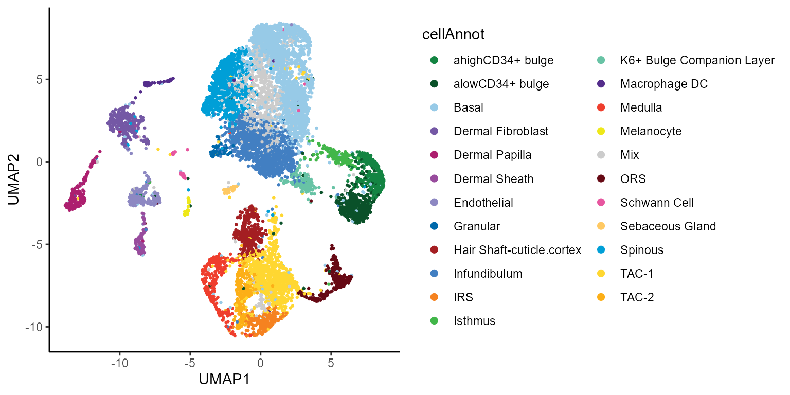
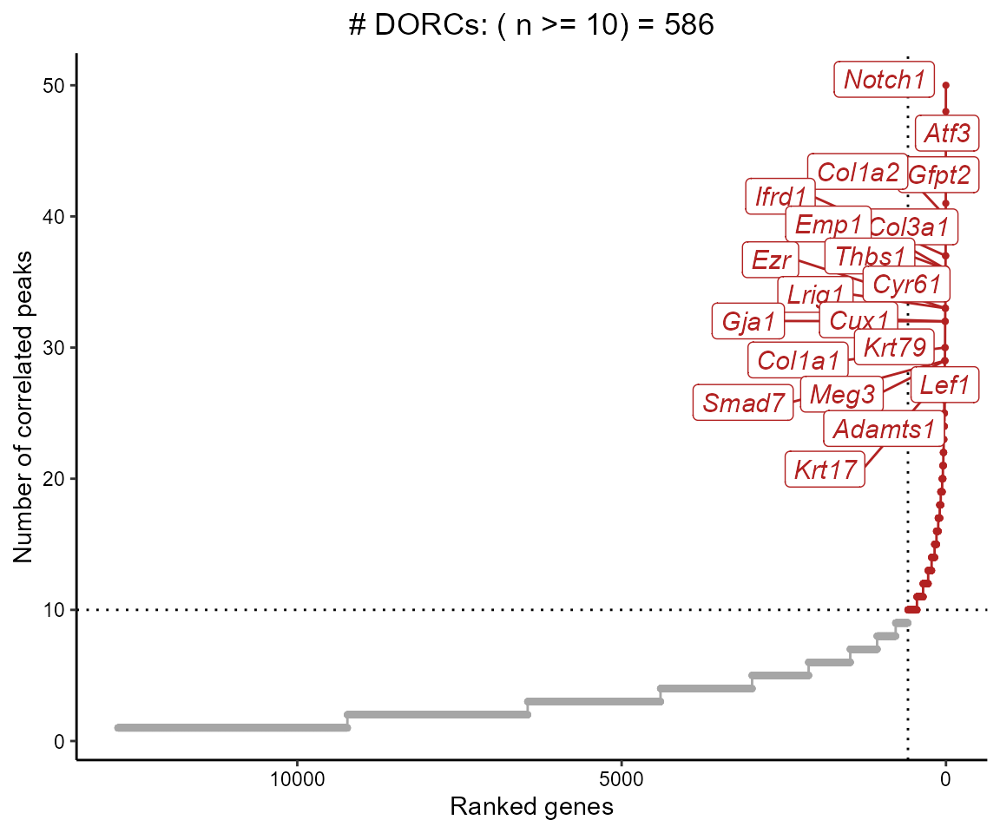
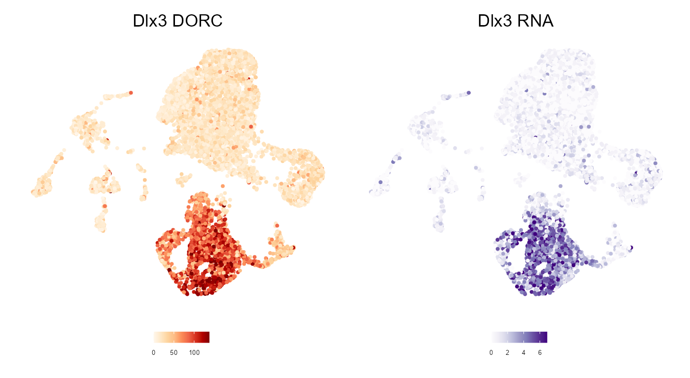
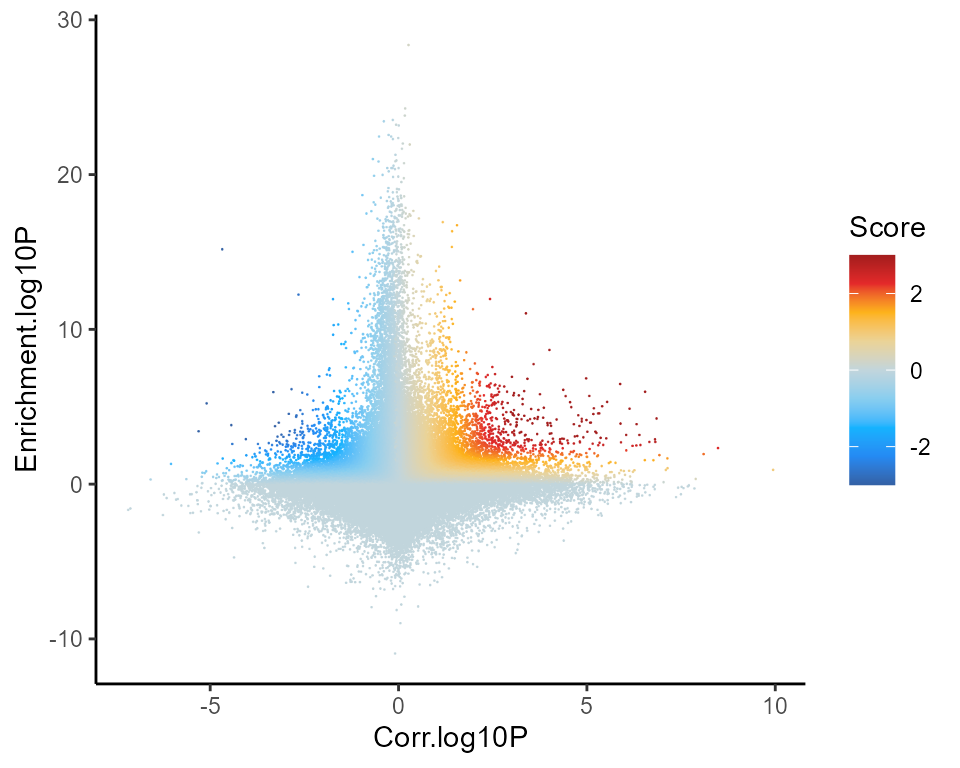
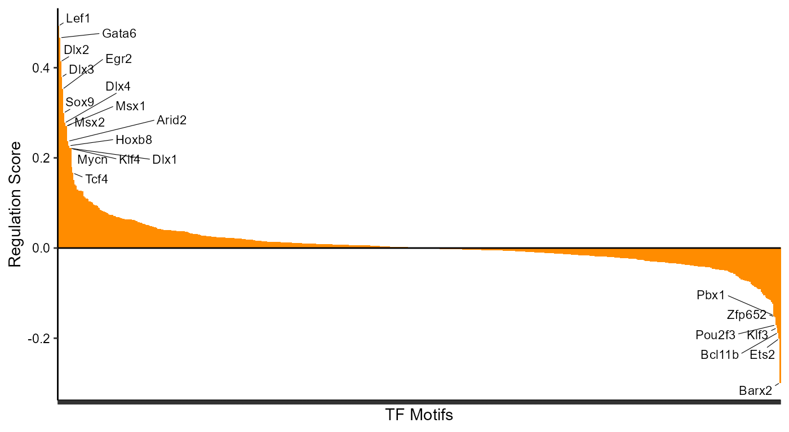
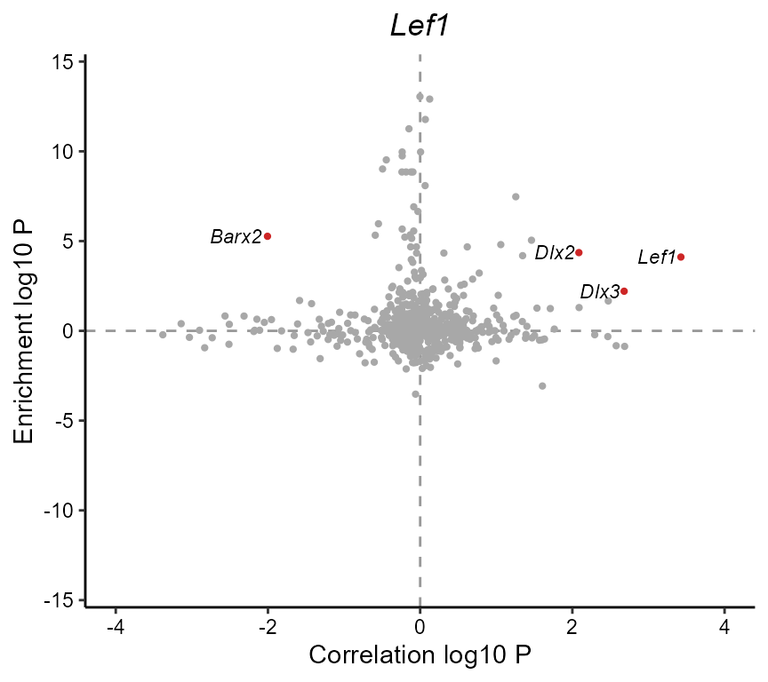
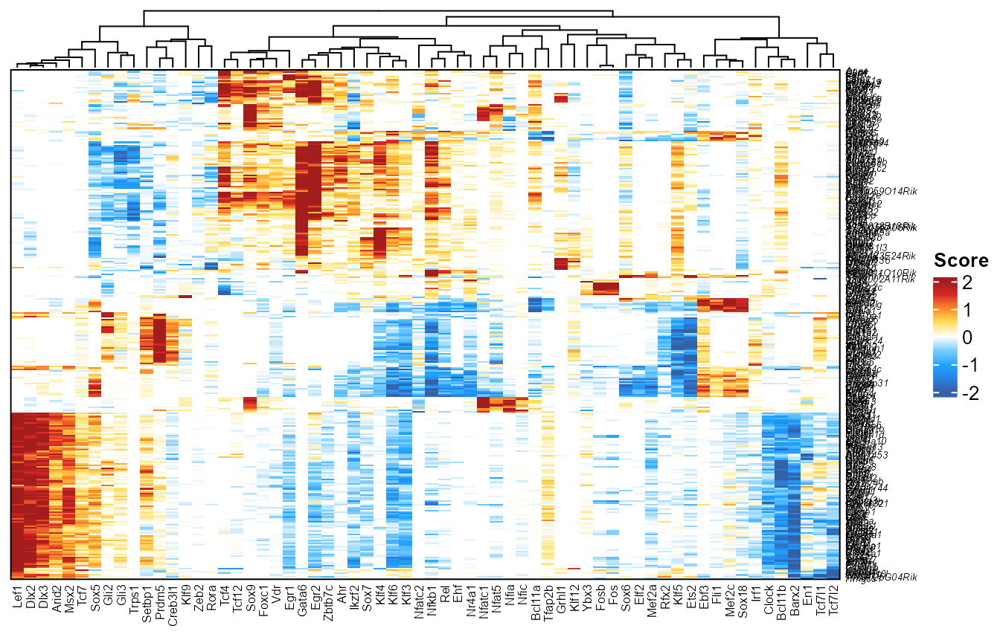
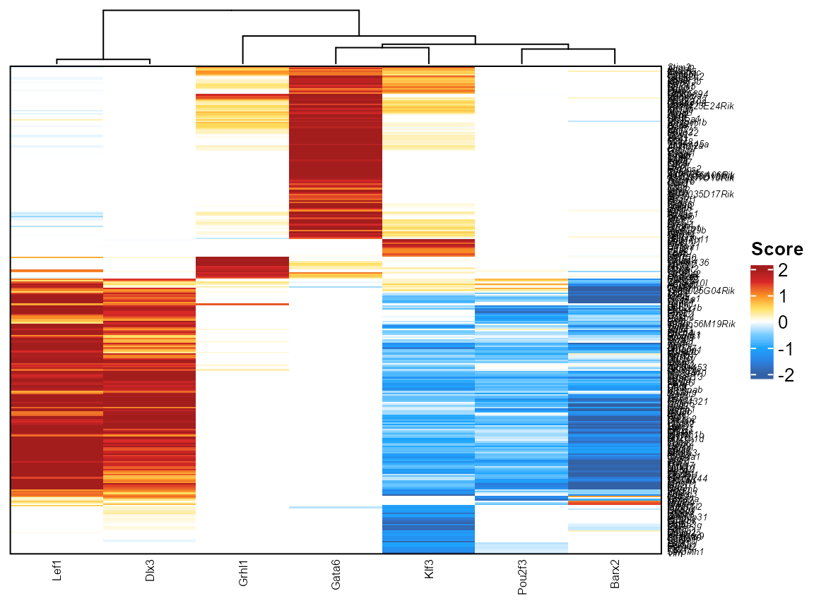

Application of FigR to SHARE-seq skin data
Vinay Kartha
2022-03-26
Source:vignettes/FigR_shareseq.Rmd
FigR_shareseq.RmdRunning FigR on multi-modal data (e.g. SHARE-seq / 10x multi-ome)
Here we demo the application of the FigR workflow 1 to previously published SHARE-seq data 2
Data downloads / Pre-processing
The data used in this tutorial can be downloaded (WARNING: Downloading this data will take up ~ 0.5 GB of your hard drive space) as shown below. We then set the unzipped directory (destination folder) to be the working directory, prior to loading the R objects.
# Directory where data will be downloaded to
workingDir <- "/Users/vinay/Documents/FigR_package/shareseq"
shareseqZip <- "https://s3.us-east-1.amazonaws.com/vkartha/FigR/FigR_SHAREseq.zip"
download.file(url = shareseqZip,
destfile = paste0(workingDir,basename(shareseqZip)))
unzip(paste(workingDir,basename(shareseqZip),sep="/"),exdir = workingDir,overwrite = FALSE)
setwd(workingDir)The first step of FigR is to determine peak-gene associations using paired single cell accessibility (scATAC-seq) and RNA (scRNA-seq) count data
First, let us load some dependencies, including the main FigR package
#> Warning: package 'FNN' was built under R version 4.0.4#> Warning: package 'cowplot' was built under R version 4.0.4
library(BSgenome.Mmusculus.UCSC.mm10)We require scATAC-seq peak counts as a SummarizedExperiment object, where the rowRanges are fixed-width accessibility peak ranges (typically 300 bp or so), and the assay object is a sparseMatrix of Tn5-instertion counts per peak per cell. Additionally, the scRNA-seq matrix can be provided as a sparseMatrix of the log-normalized gene expression levels for the same cells (e.g. processed using Seurat)
In this example, we show these two inputs pertaining to a SHARE-seq experiment performed on mouse skin cells. For simplicity, we only run this on a subset of cells (quality filtered, and sampled to n=10,000 cells for faster run-time). As a result, note that the results will be similar to what was presented in Kartha et al. , but not identical.
ATAC.se <- readRDS("./shareseq_skin_SE_final.rds")
RNAmat <- readRDS("./shareseq_skin_RNAnorm_final.rds") # Normalized
dim(ATAC.se) # Peaks x Cells#> [1] 344592 34774
dim(RNAmat) # Genes x Cells#> [1] 19303 34774
set.seed(123)
cellsToKeep <- sample(colnames(ATAC.se),size = 10000,replace = FALSE)
ATAC.se <- ATAC.se[,cellsToKeep]
RNAmat <- RNAmat[,cellsToKeep]
# Remove genes with zero expression across all cells
RNAmat <- RNAmat[Matrix::rowSums(RNAmat)!=0,]Additionally, we load an matrix object of cisTopic probability scores that was generated as part of the dimensionality reduction process implemented on the scATAC-seq count data using the cisTopic R package. This will enable us to derive a cell kNN matrix (k-nearest neighbors graph) that is used for smoothing the data. Note, if you used an alternative method for dimensionality reduction, you can derive this cell kNN matrix using alternative inputs (e.g. using the top N LSI / PCA components)
cisAssign <- readRDS("./shareseq_skin_cisTopicPs.rds")
dim(cisAssign) # Cells x Topics
all(cellsToKeep %in% rownames(cisAssign))
# Subset
cisAssign <- cisAssign[cellsToKeep,]
# Derive cell kNN using this
set.seed(123)
cellkNN <- get.knn(cisAssign,k = 30)$nn.index
dim(cellkNN)
rownames(cellkNN) <- cellsToKeepWe can use previously computed UMAP embeddings and cell type annotations to take a look at what the data encompasses.
annoCols <- readRDS("./shareseq_skin_annoCols.rds")
# Plot
library(ggplot2)
colData(ATAC.se) %>% as.data.frame() %>% ggplot(aes(UMAP1,UMAP2,color=cellAnnot)) +
geom_point(size=0.5) + scale_color_manual(values=annoCols)+
theme_classic() + guides(colour = guide_legend(override.aes = list(size=2)))
Now, we are ready to run the peak-gene correlations across cells (see below)
Peak-gene association testing
Next, we take a default (10 kb) window around each gene’s TSS, and compute the Spearman correlation across all cells between their peak accessibility counts (mean-centered) and the normalized RNA expression. For each peak-gene pair correlation, we use (default n=100) background peaks matched for GC content and accessibility to correlate to the same gene, so that we can test for significance (permutation p-value).
This works a lot faster when supported by parallelization (due to intensive background correlation calculations). Below, we use 4 cores. For 10k cells, 478,254 resulting gene-peak pairs and 100 background calculations per pair, it takes ~ 11.8 hrs (so be warned!). We recommend running this next chunk separately using
Rscript(outside of Rstudio) and saving the resulting table, so that it can be loaded for the next steps
# Don't run interactively
cisCorr <- FigR::runGenePeakcorr(ATAC.se = ATAC.se,
RNAmat = RNAmat,
genome = "mm10", # One of hg19, mm10 or hg38
nCores = 4,
p.cut = NULL, # Set this to NULL and we can filter later
n_bg = 100)
head(cisCorr)Determining DORCs
We can now filter correlations based on the background p-value, and summarize the genes that have a relatively high number of significant peak-gene associations (i.e. Domains of regulatory chromatin or ‘DORCs’)
cisCorr.filt <- cisCorr %>% filter(pvalZ <= 0.05)
dorcGenes <- dorcJPlot(dorcTab = cisCorr.filt,
cutoff = 10, # No. sig peaks needed to be called a DORC
labelTop = 20,
returnGeneList = TRUE, # Set this to FALSE for just the plot
force=2)
We can also just get the full ranked table of genes and number of significantly associated peaks, instead of only getting the gene names (so you can threshold yourself)
#> # A tibble: 12,765 x 2
#> Gene n
#> <chr> <int>
#> 1 Notch1 50
#> 2 Atf3 48
#> 3 Gfpt2 41
#> 4 Col1a2 40
#> 5 Col3a1 37
#> 6 Ifrd1 37
#> 7 Emp1 36
#> 8 Thbs1 36
#> 9 Cyr61 33
#> 10 Ezr 33
#> # ... with 12,755 more rowsVisualizing DORCs
To get the DORC accessibility scores, we simply sum up the chromatin accessibility peak counts for peaks associated with a given gene.
NOTE: It is crucial that you use the exact same
SummarizedExperimentobject here as the one that was used in therunGenePeakcorrstep
dorcMat <- getDORCScores(ATAC.se = ATAC.se, # Has to be same SE as used in previous step
dorcTab = cisCorr.filt,
geneList = dorcGenes,
nCores = 4)#> ........
#> Normalizing scATAC counts ..
#> Centering counts for cells sequentially in groups of size 5000 ..
#>
#> Computing centered counts for cells: 1 to 5000 ..
#> Computing centered counts per cell using mean reads in features ..
#>
#> Computing centered counts for cells: 5001 to 10000 ..
#> Computing centered counts per cell using mean reads in features ..
#>
#> Merging results..
#> Done!
#> Computing DORC scores ..
#> Running in parallel using 1 cores ..
#>
#> Time Elapsed: 2.06359885136286 mins
dim(dorcMat)#> [1] 586 10000We can then smooth these (sparse) counts, and visualize side-by-side with the expression.
# Smooth dorc scores using cell KNNs (k=30)
dorcMat.s <- smoothScoresNN(NNmat = cellkNN[,1:30],mat = dorcMat,nCores = 4)
# Smooth RNA using cell KNNs
# This takes longer since it's all genes
RNAmat.s <- smoothScoresNN(NNmat = cellkNN[,1:30],mat = RNAmat,nCores = 4)
# Visualize on pre-computed UMAP
umap.d <- as.data.frame(colData(ATAC.se)[,c("UMAP1","UMAP2")])
# DORC score for Dlx3
dorcg <- plotMarker2D(umap.d,dorcMat.s,markers = c("Dlx3"),maxCutoff = "q0.99",colorPalette = "brewer_heat") + ggtitle("Dlx3 DORC")#> Plotting Dlx3#> Warning: package 'ggrastr' was built under R version 4.0.4
# RNA for Dlx3
rnag <- plotMarker2D(umap.d,RNAmat.s,markers = c("Dlx3"),maxCutoff = "q0.99",colorPalette = "brewer_purple") + ggtitle("Dlx3 RNA")#> Plotting Dlx3#> Warning: package 'patchwork' was built under R version 4.0.4
dorcg + rnag
TF-gene associations
The core component of FigR is to determine TFs that are putative regulators (acivators or repressors) of DORCs. By specifying a built-in reference motif database (see Methods of associated manuscript), and providing smoothed DORC accessibility and RNA count matrices as input, we determine which DORCs are enriched for different TF binding motifs, in addition to testing their correlations to TF RNA expression. This can be done using a single command in FigR
For 708 TFs against 586 DORCs (testing with n=50 background iterations), this took ~ 1.5 hrs using 4 cores (for the same 10k cells).
figR.d <- runFigRGRN(ATAC.se = ATAC.se, # Must be the same input as used in runGenePeakcorr()
dorcTab = cisCorr.filt, # Filtered peak-gene associations
genome = "mm10",
dorcMat = dorcMat.s,
rnaMat = RNAmat.s,
nCores = 4)Visualizing FigR results
There are a few ways we can visualize the resulting TF-DORC associations inferred from FigR, that vary based on thresholding and the type of layout choice
Global regulation profile
First, we can simply plot all TF-DORC associations (all tested TFs by all tested DORCs) as a scatter plot, where each point is a TF-DORC pair. The x-axis provides the significance of the correlation of each TF’s expression to the DORC accessibility (Z-test relative to background), and the y-axis shows the relative enrichment of the TF’s motif among the DORC-associated peaks. Points are colored by their determined FigR regulation score. Putative activating associations are highlighted in red, while repressive associations are in blue
figR.d %>%
ggplot(aes(Corr.log10P,Enrichment.log10P,color=Score)) +
ggrastr::geom_point_rast(size=0.01,shape=16) +
theme_classic() +
scale_color_gradientn(colours = jdb_palette("solar_extra"),limits=c(-3,3),oob = scales::squish,breaks=scales::breaks_pretty(n=3))
Ranking TF drivers
We can rank TFs by the overall (mean) regulation score across all DORCs. This helps give a snapshot of the major activators and repressors across all cells in the data given the DORCs
rankDrivers(figR.d,rankBy = "meanScore",interactive = FALSE)#> Warning: ggrepel: 50 unlabeled data points (too many overlaps). Consider
#> increasing max.overlaps
Specify the
myLabelsparameter to label the plots above for select TFs (and not just those in the top and bottom percentiles by default). Useful to see where your TFs of interest fall among all TFs
We can also rank by the total number of targets per TF, passing a specified score filter
You can set the
interactiveparameter toTRUEand then hover over the bars for more detail, in cases where it’s hard to tell from the labels or axes (if plotting too many TFs)
rankDrivers(figR.d,score.cut = 2,rankBy = "nTargets",interactive = TRUE)Scatter view
We can also subset the plot above by restricting it to specific TFs. Only points (TFs) passing the user-defined threshold are labeled as putative drivers of the queried DORC
plotDrivers(figR.d,score.cut = 2,marker = "Lef1")
Heatmap view
For the heatmap plot, we take any TF-DORC association that meets the score cut-off, and plot the union of all TFs (columns) x DORCs (rows), colored by their associated FigR regulation score
library(ComplexHeatmap)
plotfigRHeatmap(figR.d = figR.d,
score.cut = 2,
column_names_gp = gpar(fontsize=6), # from ComplexHeatmap
show_row_dend = FALSE # from ComplexHeatmap
)
You can also restrict the heatmap above to correspond to only specific DORCs or TFs by changing the TF or DORC parameter from NULL (default)
library(ComplexHeatmap)
plotfigRHeatmap(figR.d = figR.d,
score.cut = 1,
TFs = c("Lef1","Dlx3","Grhl1","Gata6","Klf3","Barx2","Pou2f3"),
column_names_gp = gpar(fontsize=6), # from ComplexHeatmap
show_row_dend = FALSE # from ComplexHeatmap
)
Network view
Similarly, we can render the significant associations as a graph network, where each node is a TF/DORC and each edge is an association passing a user-specified threshold
#> Warning: package 'networkD3' was built under R version 4.0.5
plotfigRNetwork(figR.d,
score.cut = 2,
TFs = c("Lef1","Dlx3","Grhl1","Gata6","Klf3","Barx2","Pou2f3"),
weight.edges = TRUE)